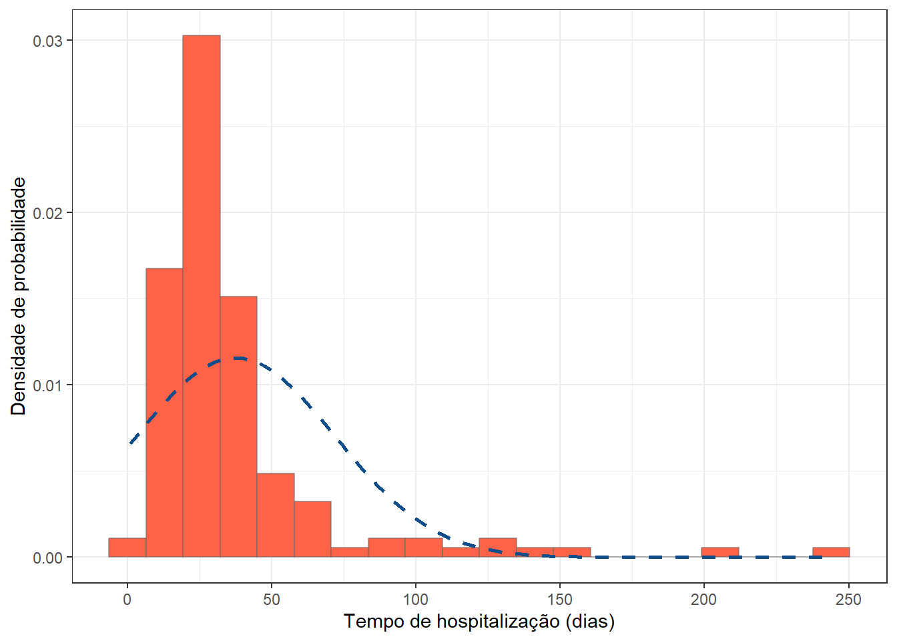

Capítulo 16 Análise de Dados Categóricos
16.2 Qui-Quadrado
Dois testes de hipótese são proeminentes na pesquisa na área da saúde. Um é o teste t de duas amostras, que é usado para testar a igualdade de duas médias populacionais independentes. O segundo é o teste qui-quadrado (denotado por \(\chi^{2}\)). O teste é denominado teste qui-quadrado porque usa a distribuição qui-quadrado ou \(\chi^{2}\).
16.2.1 Distribuição qui-quadrado
Se uma variável X é normalmente distribuída, então a variável \(X^{2}\) tem uma distribuição qui-quadrado (138). A distribuição qui-quadrado com k categorias é a distribuição de uma soma dos quadrados de k variáveis aleatórias independentes com distribuição normal. O número de categorias determina o número de graus de liberdade. O formato da distribuição qui-quadrado depende desses graus de liberdade.
Em geral, ela é assimétrica com apenas valores positivos, iniciando em zero. A assimetria diminui à medida que aumentam os graus de liberdade. Para cada grau de liberdade tem-se curvas de distribuição diferentes.

Figura 16.1: Distribuição do qui-quadrado.
A distribuição \(\chi^{2}\) converge para a distribuição normal à medida que os graus de liberdade aumentam, de acordo com o teorema do limite central, entretanto esta convergência é lenta (Figura 16.1).
A distribuição qui-quadrado tem duas aplicações comuns: primeiro, como um teste para saber se duas variáveis categóricas são independentes ou não (Teste de independência ou associação); segundo, o teste de qualidade do ajuste do qui-quadrado (Teste de aderência ou ajuste) que é usado para comparar uma determinada distribuição com uma distribuição conhecida.
16.2.2 Estatística do qui-quadrado
O cálculo da estatística \(\chi^{2}\) é baseado nas frequências existentes nas células da tabela de contingência. Em primeiro lugar, calcula-se as frequências que se espera em cada célula caso a hipótese nula seja verdadeira (frequências esperadas). Em segundo lugar, usando a equação geral, o teste mede o grau de discrepância entre o conjunto de frequências observadas (O) e o conjunto de frequências esperadas (E).
\[ \chi^{2}= \sum \left [\frac{\left (O_{i} - E_{i} \right )^2}{E_{i}} \right] \]
Se \(O_{i}\) é muito semelhante ao \(E_{i}\), então o \(\chi^{2}\) é baixo; se \(O_{i}\) é muito diferente em relação ao \(E_{i}\), então o \(\chi^{2}\) é alto.
As frequências observadas são o número de sujeitos ou objetos na amostra que se enquadram nas várias categorias da variável de interesse. As frequências esperadas são o número de sujeitos ou objetos na amostra que seria esperado observar se hipótese nula fosse verdadeira.
\[ E = \frac{total\ coluna\ \times total\ linha }{total\ geral} \] Por exemplo, suponha a Tabela 16.1:
| Sexo | Acidentes | Sem acidentes | Total |
|---|---|---|---|
| Homens | 16 | 44 | 60 |
| Mulheres | 4 | 36 | 40 |
| Total | 20 | 80 | 100 |
Usando os dados da Tabela 16.1, o número de acidentes esperados para os homens será:
## [1] 12O número de acidentes esperado para os homens é igual a 12, entretanto ocorreram 16. Houve uma diferença. Esta diferença é calculada para todas as células e será o importante no cálculo do qui-quadrado. Após o cálculo, acrescentando os valores esperados à Tabela 16.1, tem-se a Tabela 16.3 que será usada no cálculo do qui-quadrado.
| Sexo | Acidentes | Sem acidentes | Total |
|---|---|---|---|
| Homens | 12 | 48 | 60 |
| Mulheres | 8 | 32 | 40 |
| Total | 20 | 80 | 100 |
Para o cálculo do \(\chi^2\), como se está comparando proporções em uma tabela contingência \(2\times2\) (ou seja, duas linhas e duas colunas), deve-se aplicar uma correção na fórmula, mostrada acima, para ajustar o viés de continuidade. Esta correção, denominada de correção de Yates, consiste em subtrair 0,5 do valor absoluto da diferença entre a frequência observada e a esperada em cada célula da tabela, antes de elevar ao quadrado e dividir pela frequência esperada.
\[ \chi^{2}= \sum \left [\frac{\left |(O_{i} - E_{i}|-0,5 \right )^2}{E_{i}} \right] \]
Substituindo osdados na fórmula do qui-quadrado, tem-se:
\[ \chi^{2}= \left [\frac{\left (|16 - 12 \right |)^2}{12} \right]+ \left [\frac{\left (|44 - 48 \right |)^2}{48} \right]+\left [\frac{\left (|4 - 8 \right |)^2}{8} \right]+\left [\frac{\left (|36 - 32 \right|)^2}{32} \right] \\ \chi^{2}=1,021 + 0,255 + 1,531 +0,383 = 3,19 \] A correção de Yates reduz o valor do qui-quadrado 56 e torna o teste mais conservador, evitando rejeitar a hipóteses nula quando ela é verdadeira. A correção é recomendada em tabelas de contingência \(2\times2\) ou quando o tamanho da amostra é pequeno (menor que 40) ou quando há pelo menos uma célula com frequência esperada menor que 5.
16.2.2.1 Restrições ao qui-quadrado
- Regra Geral
O teste pode ser usado, se a frequência observada em cada célula for maior ou igual a 5 e a frequência esperada for maior ou igual a 5.
- Tabela 2 \(\times\) 2 (gl = 1)
Como mostrado no exemplo acima, neste caso, é recomendada a Correção de Continuidade de Yates, mesmo quando o n for grande.
- Tabela l \(\times\) c
O teste pode ser usado se o número de células com frequência esperada inferior a 5 for menor do que 20% do total das células e nenhuma frequência esperada é igual a zero.
- n pequeno
Neste caso, é preconizado o Teste Exato de Fisher.
16.2.2.2 Valor crítico do qui-quadrado
A estatística de teste (que em certo sentido é a diferença entre as frequências observadas e esperadas) deve ser comparada a um valor crítico para determinar se a diferença é grande ou pequena. Não se pode dizer se uma estatística de teste é grande ou pequena sem colocá-la em perspectiva com o valor crítico. Se a estatística de teste estiver acima do valor crítico, significa que a probabilidade de observar tal diferença entre as frequências observadas e esperadas é improvável.
O valor crítico pode ser encontrado na tabela estatística da distribuição Qui-quadrado e depende do nível de significância, denotado \(\alpha\), e dos graus de liberdade, denotado \(gl\). O nível de significância geralmente é igual a 5%. Os graus de liberdade para um teste de Qui-quadrado de independência são encontrados da seguinte forma:
\[ gl = (numero \ de \ linhas - 1) \ \times \ (numero \ de \ colunas - 1) \]
Em uma tabela de contingência 2 \(\times\) 2, como a Tabela 16.1, tem \(gl = (2 - 1) \times (2 - 1) = 1\). Basta agora obter o valor crítico com a função qchisq():
## [1] 3.841459Este valor é comparado com o \(\chi^{2}_{calculado}\) para um nível de significância de 5%. Se ele é maior, rejeita-se se a \(H_{0}\); caso contrário, não se rejeita. Para obter o valor P, pode-se usar a função pchisq(), onde, como argumento, coloca-se o valor do \(\chi^{2}_{calculado}\), os graus de liberdade e acrescenta-se lower.tail = FALSE para obter a probabilidade da cauda superior, uma vez que a distribuição do qui-quadrado é positiva.
O valor crítico é igual a 3,84 e, no exemplo, o \(\chi^{2}_{calculado}\) é igual a 3,19, logo a valor P é igual a:
## [1] 0.07409001Dessa forma, conclui-se ,com uma confiança de 95%, que os homens têm uma proporção maior de acidentes comparados às mulheres (\(\chi^{2} (1) = 3,19;P=0,074\)). Observe na Figura 16.2 que o \(\chi^{2}_{calculado}\) localiza-se a esquerda da linha vertical, da área vermelha de rejeição da \(H_{0}\). Atente, que se não fosse feita a correção de Yates, a conclusão seria diferente, pois o \(\chi^{2}_{calculado}\) seria igual a 4,17 e estaria um pouco cima do \(\chi^{2}_{crítico}\), na área de rejeição da \(H_{0}\). Com a correção de Yates o valor P é igual a 0,074, sem a correção de continuidade igual a 0,041, isto configura o que se chama de valor P marginal e, nesses casos, deve-se ter muito cuidado na conclusão, pois existe risco de erro tipo II, não rejeitar uma \(H_{0}\) quando ela é falsa.
plotchisqtest(chisq = 3.84,
df = 1,
colorleft = "aliceblue",
colorright = "red",
ylabel = "Densidade de probabilidade sob a hipótese nula")
Figura 16.2: Distribuição do qui-quadrado, gl = 1, alpha = 0,05.
O gráfico foi criado com a função plotchisqteste() do pacote nhstplot, pacote simples e conveniente para representar graficamente os testes de significância de hipótese nula mais comuns, como testes F, testes t e testes z (139).
16.2.3 Qui-quadrado de independência ou associação
16.2.3.1 Dados usados nesta seção
O exemplo da Tabela 16.1, usado para mostrar a lógica do qui-quadrado, é um teste de independência ou associação. Ali, foi mostrado que existe uma associação estatisticamente significativa (P < 0,05) entre acidentes automobilísticos e o sexo masculino. Como exercício, serão usados outros dados que necessitam mais manipulação como treinamento do qui-quadrado de associação e do próprio R. Estes dados servirão para testar a hipótese de associação entre tabagismo e baixo peso ao nascer (< 2500g).
Leitura e transformação dos dados
Os dados serão provenientes do banco de dados dadosMater.xlsx. bastante usado neste livro 57 . Como ele já deve estar no seu diretório, fazer a leitura da seguinte maneira:
Adicione a este arquivo uma variável denominada baixoPeso, usando a função mutate() do pacvote dplyr a função ifelse (), da base do R:
Onde 1 = sim e 2 = não, ou seja, com peso de nascimento < 2500g ou \(\ge\) 2500g.
O próximo passo é selecionar, deste arquivo, apenas esta variável criada e a variável fumo, porque o objetivo da análise será verificar se existe associação entre tabagismo na gestação e baixo peso ao nascer (< 2500g). Para isso, usa-se a função select() do pacote dplyr:
A seguir, será extraída uma amostra deste banco de dados com n = 300, usando a função sample_n() do pacote dplyr. A função set.seed() apenas garante que os dados selecionados aleatoriamente se mantenham os mesmos em outros sorteios (veja seção 7.7.2):
## tibble [300 × 2] (S3: tbl_df/tbl/data.frame)
## $ fumo : num [1:300] 2 2 1 2 2 2 1 2 2 2 ...
## $ baixoPeso: chr [1:300] "2" "2" "1" "2" ...Tem-se, agora, um conjunto de dados com duas colunas: fumo, como uma variável numérica e baixoPeso, como caractere. Ambas devem ser transformadas em fator e, onde os rótulos são 1 e 2, passam para “sim” e “não” e mantendo a ordem “sim” e “não”.
dados$fumo <- factor(dados$fumo,
levels = c(1, 2),
labels = c("sim", "não"))
dados$baixoPeso <- factor(dados$baixoPeso,
levels = c(1, 2),
labels = c("sim", "não"))
str (dados)## tibble [300 × 2] (S3: tbl_df/tbl/data.frame)
## $ fumo : Factor w/ 2 levels "sim","não": 2 2 1 2 2 2 1 2 2 2 ...
## $ baixoPeso: Factor w/ 2 levels "sim","não": 2 2 1 2 1 2 2 2 2 2 ...Tabelas
Com os dados, será construída uma tabela com a função table()
## baixoPeso
## fumo sim não Sum
## sim 18 51 69
## não 22 209 231
## Sum 40 260 300OBSERVAÇÃO: Uma tabela é constituída por linhas e colunas. Para se extrair valores da tabela, usa-se os colchetes, após o nome da tabela. O primeiro valor dentro dos colchetes é referente ao número da linha; o segundo, separado pela virgula, é referente ao número da coluna. Então, tab[1,1] se refere ao valor que está na primeira linha e primeira coluna:
## [1] 18A proporção de baixo peso por categoria de tabagismo (nº de casos/total da linha):
## [1] 0.2608696## [1] 0.0952381Visualização gráfica
Será construído um gráfico de barras empilhadas com o ggplot() do pacote ggplot2 (ver Seção 6.6):
ggplot(dados) +
aes (x = fumo, fill = baixoPeso) +
geom_bar (color = "black") +
scale_fill_manual(values = c("gray", "aliceblue")) +
labs (title = NULL,
x = "Tabagismo",
y = "Frequência") +
annotate("text", x="sim", y=62, label= "26,1%") +
annotate("text", x = "não", y=223, label = "9,5%") +
theme_bw () +
theme (text = element_text (size = 12)) +
labs(fill = "Peso ao nascer < 2500g")Figura 16.3: Gráfico de barras empilhadas: tabagismo vs baixo peso ao nascer.
Observa-se, Figura 16.3, que 24,6% das gestantes fumantes geram bebês com baixo peso, enquanto que entre as não fumantes este percentual cai três vezes, indo para 9,5%. É uma diferença grande! Aqui, quase se tem certeza que ela é significativa, mesmo sem cálculos!
16.2.3.2 Hipóteses estatísticas
\(H_{0}\): a proporção de baixo peso é igual nos dois grupo (fumantes e não fumantes); não há associação entre as variáveis.
\(H_{1}\): a proporção de baixo peso é diferente nos dois grupo (fumantes e não fumantes); existe associação entre as variáveis.
16.2.3.3 Cálculo do Qui-quadrado de Pearson no R
Para este exemplo, o \(\chi^{2}\) irá verificar se existe uma associação entre as variáveis fumo e baixoPeso, assumindo um \(\alpha = 0,05\) que equivale a um valor crítico de 3,84 com um grau de liberdade, em uma tabela \(2 \times 2\). A função chisq_test() do pacote rstatix libera o qui-quadrado, usando os seguintes argumentos:
- x \(\to\) vetor numérico ou matriz. Tanto x como y podem ser fatores;
- y \(\to\) vetor numérico. Ignorado quando se x é uma matriz;
- correct \(\to\) TRUE é o padrão. Indica se deve ser aplicada a correção de continuidade ao calcular a estatística de teste para tabelas 2 por 2 58;
- … \(\to\) para outros argumentos consulte a ajuda do RStudio.
Para executar a função chisq_test(), basta colocar como argumento as variáveis fumo e baixoPeso ou construir antes uma tabela de contingência com a função table() e depois colocá-la como argumento. Como tabela tab já existe:
## # A tibble: 1 × 6
## n statistic p df method p.signif
## * <int> <dbl> <dbl> <int> <chr> <chr>
## 1 300 11.2 0.000809 1 Chi-square test ***A saída do teste exibe tudo que é necessário. O \(\chi^{2}\) = 11.2 com um valor muito maior que o valor crítico de 3,84, mostrando que a diferença é estatisticamente significativa (P = 8.09^{-4}). Essas e outras estatísticas podem ser obtidas, usando o objeto teste seguido do sinal $. Por exemplo, para o valor P:
## [1] 0.000809NOTA: Se um aviso como Chi-squared approximation may be incorrect (Aproximação qui-quadrado pode estar incorreta) aparecer, significa que as menores frequências esperadas são inferiores a 5. Para evitar esse problema, é possível usar uma das seguintes opções:
- reunir alguns níveis (especialmente aqueles com um pequeno número de observações) para aumentar o número de observações nos subgrupos, ou
- usar o teste exato de Fisher.
Outras maneiras de calcular o qui-quadrado no R
No pacote gmodels (140), existe uma função muito interessante, a função CrossTable() que que imprime, além de uma tabela de frequência com as proporções, exibe vários testes, como o teste \(\chi^2\), o teste exato de Fisher e o teste de McNemar com e sem correção de continuidade. Consulte a ajuda para melhor estudar esta elegante função! Neste momento, será explorado apenas o qui-quadrado e os valores esperados com três dígitos:
##
##
## Cell Contents
## |-------------------------|
## | N |
## | Expected N |
## | N / Row Total |
## | N / Col Total |
## |-------------------------|
##
##
## Total Observations in Table: 300
##
##
## | baixoPeso
## fumo | sim | não | Row Total |
## -------------|-----------|-----------|-----------|
## sim | 18 | 51 | 69 |
## | 9.200 | 59.800 | |
## | 0.261 | 0.739 | 0.230 |
## | 0.450 | 0.196 | |
## -------------|-----------|-----------|-----------|
## não | 22 | 209 | 231 |
## | 30.800 | 200.200 | |
## | 0.095 | 0.905 | 0.770 |
## | 0.550 | 0.804 | |
## -------------|-----------|-----------|-----------|
## Column Total | 40 | 260 | 300 |
## | 0.133 | 0.867 | |
## -------------|-----------|-----------|-----------|
##
##
## Statistics for All Table Factors
##
##
## Pearson's Chi-squared test
## ------------------------------------------------------------
## Chi^2 = 12.61347 d.f. = 1 p = 0.0003829762
##
## Pearson's Chi-squared test with Yates' continuity correction
## ------------------------------------------------------------
## Chi^2 = 11.22084 d.f. = 1 p = 0.0008088369
##
## Observe que a saída mostra em cada célula da tabela, o número de casos, o número esperado, a percentagem por linha (nº de casos/total da linha) e a percentagem por coluna (nº de casos/total da coluna). Por último, exibe o qui-quadrado de Pearson com e sem coreção de continuidade de Yates.
16.2.3.4 Conclusão e relato dos resultados
Usando a correção de continuidade de Yates, pois é uma tabela \(2\times2\), vê-se que o valor P é menor que o nível de significância de 5% e, consequentemente, rejeita-se a hipótese nula e conclui-se que existe uma associação significativa entre tabagismo na gestação e o baixo peso ao nascimento (\(\chi^{2}_{com \ correção \ de \ Yates} (1)\) = 11.2; P = 0,00081).
Além disso, no relato dos resultados pode-se apresentar uma tabela ou em um gráfico.
Tabela
Para a construção da tabela, pode-se usar a função ctable() do pacote summarytools(141) para obter uma tabela com todos os dados a serem exibidos. O argumento prop = "r" exibe os percentuais das linhas (“c”, nas colunas). Na realidade, são maneiras diferente de se obter o mesmo resultado.
##
## ------- ----------- ------------ ------------- --------------
## baixoPeso sim não Total
## fumo
## sim 18 (26.1%) 51 (73.9%) 69 (100.0%)
## não 22 ( 9.5%) 209 (90.5%) 231 (100.0%)
## Total 40 (13.3%) 260 (86.7%) 300 (100.0%)
## ------- ----------- ------------ ------------- --------------
##
## ----------------------------
## Chi.squared df p.value
## ------------- ---- ---------
## 11.2208 1 8e-04
## ----------------------------
##
## ----------------------------------
## Odds Ratio Lo - 95% Hi - 95%
## ------------ ---------- ----------
## 3.35 1.67 6.71
## ----------------------------------Ou seja, os bebês que se expuseram ao fator de risco (fumo) têm uma chance 3,35 (IC95% : 1,67-6,71) vezes maior de apresentar peso < 2500g ao nascer, nessa amostra.
Além desses resultados, a tabela final pode conter (e isto é recomendado!) os intervalos de confiança para cada uma das proporções de fumantes e não fumantes. Para isso a função BinomCI() cumpre um papel suficiente (veja Seção 10.7.3.2).
Então, a proporção de baixo peso entre as fumantes é:
## est lwr.ci upr.ci
## [1,] 0.2608696 0.1625161 0.3805962E, entre as não fumantes é:
## est lwr.ci upr.ci
## [1,] 0.0952381 0.06065157 0.1406387Finalmente, esses dados podem ser colocados em uma tabela, como a Tabela 16.5:
| Fumantes | Não fumantes | Valor P * | |
|---|---|---|---|
| Baixo Peso | 18/69 | 22/231 | 0.00081 |
| IC95% | 16,3-38,1 | 6,1-14,1 | |
| Note: | |||
| * Qui-quadrado de Pearson com correção. |
Gráfico
Uma boa apresentação gráfica complementa o relatório dos resultados. Pode-se fazer isso com gráfico de barras empilhadas (), acompanhado dos percentuais e do tipo de teste realizado, usando a função get_test_label() que necessita do teste calculado com a função chisq_test() do pacote rstatix, apresentado antes. O gráfico assume o aspecto da Figura 16.4:
ggplot(dados) +
aes (x = fumo, fill = baixoPeso) +
geom_bar (color = "black") +
scale_fill_manual(values = c("gray", "gray95")) +
labs (title = NULL,
subtitle = get_test_label (teste, detailed = TRUE),
x = "Tabagismo",
y = "Frequência") +
annotate("text", x="sim", y=62, label= "24,6% (15,0-36,5)") +
annotate("text", x = "não", y=223, label = "8,2% (5,0-12,5)") +
theme_bw () +
theme (text = element_text (size = 12)) +
labs(fill = "Peso ao nascer < 2500g")
Figura 16.4: Gráfico de barras empilhadas: tabagismo vs baixo peso ao nascer.
16.2.4 Teste Aderência ou do Melhor Ajuste
O teste de qualidade de ajuste do qui-quadrado (chi-square goodness of fit) é usado para comparar a distribuição observada com uma distribuição esperada, em uma situação em que se tem duas ou mais categorias em dados discretos. Em outras palavras, ele compara várias proporções observadas com as probabilidades esperadas (142).
16.2.4.1 Dados usados nesta seção
Há uma dúvida se o número de pacientes que procura uma determinada Unidade de Pronto Atendimento (UPA) é aproximadamente o mesmo em todos os dias da semana. Esta é uma informação importante sob o ponto de vista administrativo. Para se atingir este objetivo registrou-se o número de pacientes que procurou a UPA por dia da semana.
O número de atendimentos nos sete dias (de segunda-feira à domingo) da semana está representada pela frequência observada, freq_obs:
## [1] 20 17 22 21 26 33 36O total de atendimentos durante uma semana é igual a:
## [1] 175Assim, a frequência esperada diária é igual a soma total dos atendimentos dividido pelo número observações (no caso, dias da semana), representada por k:
## [1] 25Com estes valores , pode-se criar um vetor, p, com as proporçõess dos atendimentos diários esperados:
## [1] 0.1428571 0.1428571 0.1428571 0.1428571 0.1428571 0.1428571 0.142857116.2.4.2 Hipóteses estatísticas
\(H_{0}\): a distribuição das frequências observadas (O) é igual a distribuição de frequências esperadas (E).
\(H_{1}\): a distribuição das frequências observadas (O) não é igual a distribuição de frequências esperadas (E)
16.2.4.3 Cálculo da estatística do teste
Assumindo um \(\alpha = 0,05\). Os graus de liberdade são calculados como o número de células (k) menos 1: \(gl = (k - 1)\). O \(\chi^{2}_{crítico}\) pode ser encontrado usando:
## [1] 12.59159Em outras palavras, se o \(\chi^{2}_{calculado}\) > \(\chi^{2}_{crítico}\), rejeita-se a \(H_{0}\). Na Figura 16.5, o resultado tem que ficar à direita da linha vertical vermelha para que a hipótese nula seja rejeitada. Se cair fora da área de rejeição, à esquerda da linha vertical vermelha, aceita-se a hipóteses nula.
plotchisqtest(chisq = 12.6,
df = 6,
colorleft = "aliceblue",
colorright = "red",
ylabel = "Densidade de probabilidade",
colorcut = "red",)
Figura 16.5: Distribuição do qui-quadrado, gl = 6, alpha = 0,05.
A estatística do teste pode ser encontrada, usando a função chisq.test():
##
## Chi-squared test for given probabilities
##
## data: freq_obs
## X-squared = 12, df = 6, p-value = 0.0619716.2.4.4 Conclusão
Observando-se a saída do teste do qui-quadrado, verifica-se que o \(\chi^{2}_{calculado}\) < \(\chi^{2}_{crítico}\), portanto, não se rejeita a \(H_{0}\) e conclui-se que, nesta amostra, com uma confiança de 95%, que a frequência observada de pacientes à UPA é igual a esperada (P = ). Lembrando que, neste caso, como se tem um valor P limitrofe, marginal, existe a possibilidade de se estar aceitando uma \(H_{0}\) falsa e cometendo um erro tipo II. Seria recomendado, aumentar o tamanho amostral em uma nova coleta, usando estes dados como um piloto para o cálculo amostral.
16.2.5 Qui-quadrado de Pearson para tabelas extensas
Este teste é utilizado quando o número de grupos, k, é superior a 2.
16.2.5.1 Dados usados nesta seção
Como exemplo, será verificado se existe uma tendência de maior taxa de infecção nos neonatos que permanecem mais tempo hospitalizados. O banco de dados dadosCirurgia.xlsx que pode ser encontrado aqui. Salve o mesmo no seu diretório de trabalho.
Esse bancode dados contém 144 recém-nascidos submetidos a diferentes procedimentos cirúrgicos. As variávreis disponíveis são:
- id \(\to\) identificação do neonato;
- sexo \(\to\) sexo do recém-nascido,
fememasc; - peso \(\to\) peso do neonato em gramas;
- tempohosp \(\to\) tempo de hospitalização em dias;
- infec \(\to\) presença de infecção secundária: sim e não;
- cirurgia \(\to\) tipo de cirurgia: abdominal, cardíaca, outra.
A variável tempo de hospitalização (tempohosp) é contínua e assimétrica. Para ser usada aqui, será categorizada por quartis. A variável infec (presença de infecção) é uma variável dicotômica (sim, não).
Leitura e transformação dos dados
A leitura dos dados é feita com:
## tibble [144 × 7] (S3: tbl_df/tbl/data.frame)
## $ id : num [1:144] 1 2 3 4 5 6 7 8 9 10 ...
## $ sexo : chr [1:144] "masc" "masc" "masc" "masc" ...
## $ peso : num [1:144] 2020 1850 2540 1150 2900 ...
## $ ig : num [1:144] 36 30 38 31 36 37 38 39 38 39 ...
## $ tempohosp: num [1:144] 37 37 37 46 37 36 30 18 25 14 ...
## $ infec : chr [1:144] "não" "não" "sim" "sim" ...
## $ cirurgia : chr [1:144] "abdominal" "abdominal" "abdominal" "outra" ...Característicamente, a variável tempohosp (tempo de hospitalização) é, quase sempre, assimétrica:
cirurgia %>% ggplot() +
geom_histogram(aes(x = tempohosp,
y = after_stat(density)),
fill = "tomato",
bins = 20,
col=alpha("gray40",0.5)) +
geom_function(fun=dnorm,
args=list(mean=mean(cirurgia$tempohosp, na.rm = T),
sd= sd(cirurgia$tempohosp, na.rm = T)),
col='dodgerblue4',
lwd=1,
lty=2) +
labs(x='Tempo de hospitalização (dias)',
y='Densidade de probabilidade') +
theme_bw()
A variável tempohosp será categorizada em quartis. O resumo da mesma, usando a função summary(), fornece orientação para esse procedimento:
## Min. 1st Qu. Median Mean 3rd Qu. Max.
## 1.00 20.75 27.50 37.42 42.00 245.00O sumário da variável fornece orientação para a categorização, que será realizada, usando a função cut(), consulte a Seção 6.4.2 para detalhes de construção de uma tabela de frequência:
cirurgia$tempo <- cut(cirurgia$tempohosp,
breaks = c(1, 20.75, 27.50, 42.00, 245),
labels = c("<= 21","22-28", "29-42",">42"),
right = FALSE,
include.lowest = TRUE)
tab1 <- table (cirurgia$tempo)
tab1##
## <= 21 22-28 29-42 >42
## 36 36 35 37Por exemplo, 36 recém-nascidos premaneceram 21 dias ou menos no pós-operatório e 37 recém-nascidos ficarm internados mais do que 42 dias.
Agora, a variável cirurgia$infec será colocada como um fator:
##
## sim não
## 56 88A nova variável tempo será cruzada com a variável infec em uma tabela:
##
## sim não Sum
## <= 21 9 27 36
## 22-28 11 25 36
## 29-42 14 21 35
## >42 22 15 37
## Sum 56 88 144Ou seja, a proporção de recém-nascidos que se infectaram no pós-operatório foi 56/144 = 0,39 ou 39%. Se for calculada a proporção para cada um dos quartis do tempo de hospitalização, através da função ctable() do pacote summarytools, observa-se que a proporção de neonatos infectados no pós-operatório aumenta com o tempo de hospitalização (Tabela ??):
##
## ------- ------- ------------ ------------ --------------
## infec sim não Total
## tempo
## <= 21 9 (25.0%) 27 (75.0%) 36 (100.0%)
## 22-28 11 (30.6%) 25 (69.4%) 36 (100.0%)
## 29-42 14 (40.0%) 21 (60.0%) 35 (100.0%)
## >42 22 (59.5%) 15 (40.5%) 37 (100.0%)
## Total 56 (38.9%) 88 (61.1%) 144 (100.0%)
## ------- ------- ------------ ------------ --------------16.2.5.2 Hipóteses estatísticas
\(H_{0}\): A presença de infecção não altera o tempo de hospitalização.
\(H_{1}\): A presença de infecção altera o tempo de hospitalização.
16.2.5.3 Cálculo da estatística do teste
O teste estatístico pode ser calculado, usando o argumento chisq = TRUE na função ctable():
##
## ------- ------- ------------ ------------ --------------
## infec sim não Total
## tempo
## <= 21 9 (25.0%) 27 (75.0%) 36 (100.0%)
## 22-28 11 (30.6%) 25 (69.4%) 36 (100.0%)
## 29-42 14 (40.0%) 21 (60.0%) 35 (100.0%)
## >42 22 (59.5%) 15 (40.5%) 37 (100.0%)
## Total 56 (38.9%) 88 (61.1%) 144 (100.0%)
## ------- ------- ------------ ------------ --------------
##
## ----------------------------
## Chi.squared df p.value
## ------------- ---- ---------
## 10.5801 3 0.0142
## ----------------------------16.2.5.4 Conclusão
A partir desses resultados, pode-se inferir que a menor taxa de infecção no grupo do primeiro quartil e é significativamente diferente em relação a taxa de infecção do maior quartil, mas sem indicação para os grupos intermediários.
É útil fazer o teste de tendência linear (Linear-by-linear Association). Para isso, pode-se usar a função lbl_test () do pacote coin.
##
## Asymptotic Linear-by-Linear Association Test
##
## data: cirurgia$tempo (ordered) by cirurgia$infec (sim, não)
## Z = 3.1231, p-value = 0.001789
## alternative hypothesis: two.sidedEste teste indica uma tendência significativa para a presença de infecção à medida que aumenta o tempo de hospitalização (P = 0,0018).
16.3 Teste exato de Fisher
O teste do qui-quadrado não é um método apropriado de análise se a amostra é pequena. Por exemplo, se n for menor que 20 ou se n estiver entre 20 e 40 e uma das frequências esperadas for menor que 5, o teste do qui-quadrado deve ser evitado. Nesta situação, é recomendado o teste exato de Fisher.
16.3.1 Dados usados nesta seção
Um estudo estabeleceu como objetivo verificar se a asma não controlada é um fator de risco para a procura da emergência. Foram acompanhados 16 escolares asmáticos durante um ano com relação ao número de visitas à emergência de acordo com o controle da sua asma.
16.3.1.1 Entrando com os dados
Em primeiro lugar, serão criadas duas variáveis:
A seguir, usando essas variáveis, será construído um dataframe que será atribuído ao objeto dadosControle:
16.3.1.2 Transformação dos dados
Ambas as variáveis são numéricas e serão transformadas em fatores, considerando 1 = sim e 2 = não e considerando essa ordem:
dadosControle$emerg <- factor (dadosControle$emerg,
ordered=TRUE,
levels = c (1,2),
labels = c ('sim', 'não'))
dadosControle$controle <- factor (dadosControle$controle,
ordered=TRUE,
levels = c (1,2),
labels = c ('sim', 'não'))
str(dadosControle)## 'data.frame': 16 obs. of 2 variables:
## $ emerg : Ord.factor w/ 2 levels "sim"<"não": 1 1 2 2 2 2 2 1 1 1 ...
## $ controle: Ord.factor w/ 2 levels "sim"<"não": 1 1 1 1 1 1 1 2 2 2 ...16.3.2 Hipóteses estatísticas
\(H_0\): as variáveis são independentes, não há relação entre as duas variáveis categóricas.
\(H_1\): as variáveis são dependentes, existe uma relação entre as duas variáveis categóricas.
16.3.3 Cálculo da estatística do teste
O teste exato de Fisher é usado quando há pelo menos uma célula na tabela de contingência das frequências esperadas abaixo de 5. Para recuperar as frequências esperadas, use a função chisq.test (), do R base, junto com $expected:
## Warning in chisq.test(dadosControle$controle, dadosControle$emerg): Aproximação
## do qui-quadrado pode estar incorreta## dadosControle$emerg
## dadosControle$controle sim não
## sim 4.375 2.625
## não 5.625 3.375A saída do teste imprime um aviso de que o qui-quadrado pode estar incorreto. Há necessidade, devido a presença de três células com valores abaixo de 5, de se usar o teste de Fisher. este pode ser obtido através da função fisher_test(), do pacote rstatix, colocando como argumento uma tabela de contingência \(2\times2\), como a tab3:
## # A tibble: 1 × 8
## n estimate p conf.low conf.high method alternative p.signif
## * <int> <dbl> <dbl> <dbl> <dbl> <chr> <chr> <chr>
## 1 16 0.0646 0.035 0.000953 0.991 Fisher's Exact t… two.sided *16.3.4 Conclusão
O valor \(P=0,035\) é menor que o nível de significância de 5%, previamente estabelecido, e, portanto, deve-se rejeitar a hipótese nula. No contexto, rejeitar a hipótese nula para o teste exato de independência de Fisher significa que há uma associação significativa entre as duas variáveis categóricas (controle da asma e visitas à emergência).
16.4 Teste de Macnemar
É um teste estatístico não paramétrico aplicável nos estudos tipo “antes-e-depois” em que cada indivíduo é utilizado como seu próprio controle e a medida é efetuada em escala nominal. O teste de McNemar é usado para determinar se há uma diferença estatisticamente significativa nas proporções entre os dados emparelhados.
As medidas coletadas nesses tipos de projetos de estudo não são independentes e, portanto, os testes do Qui-quadrado não podem ser usados porque os pressupostos serão violados.
O teste de McNemar é usado para avaliar se há uma mudança significativa nas proporções ao longo do tempo para dados emparelhados ou se há uma diferença significativa nas proporções entre casos e controles. O resultado de interesse é a mudança dentro da pessoa (ou diferenças dentro do par) e não há variáveis explicativas.
O teste é calculado examinando o número de respostas que são concordantes para positivo (sim em ambas as ocasiões) e negativo (não em ambas as ocasiões) e o número de pares disconcordantes (sim e não, ou não e sim). Os pares concordantes não fornecem informações sobre as diferenças e não são usados na avaliação. Em vez disso, deve-se concentrar nos pares discordantes, que podem ser divididos em dois tipos: um par discordante do tipo sim – não e um par discordante tipo não – sim (143).
16.4.1 Pressupostos do teste de McNemar
Os pressupostos para o teste de McNemar são:
- A variável desfecho é binária, dicotômica;
- Cada participante é representado na tabela apenas uma vez;
- A diferença entre as proporções emparelhadas é o resultado de interesse;
- O teste de McNemar pode não ser confiável se houver contagens baixas nas células “discordantes”. Existe recomendação de que a soma dessas células seja \(\ge 20\) (144).
16.4.2 Dados usados nesta seção
Em uma universidade, um professor de bioestatística comparou as atitudes de 200 estudantes de Medicina em relação à confiança que eles depositam na análise estatística antes e depois da conclusão da disciplina. A pergunta feita foi: Confiam na análise estatística utilizada nos periódicos médicos? As respostas podem ser resumidas na Tabela 16.7:
| Pré-teste | Pós-teste (sim) | Pós-teste (não) | Total |
|---|---|---|---|
| Sim | 20 (a) | 8 (b) | 28 |
| Não | 22 (c) | 150 (d) | 172 |
| Total | 42 | 158 | 200 |
16.4.3 Hipóteses estatísticas
Considerando as caselas a, b, c e da Tabela 16.7, a hipótese nula de homogeneidade marginal indica que as duas probabilidades marginais para cada resultado são as mesmas, isto é,
\[ p_{a} + p_{b} = p_{a} + p_{c} \] e
\[ p_{c} + p_{d} = p_{b} + p_{d} \]
Assim, a hipótese nula e a hipótese alternativa são:
\(H_{0}\): a proporção de alunos que respondem
simno pré-teste e no pós-teste é a mesma.
\(H_{1}\): a proporção de alunos que respondemsimno pré-teste e no pós-teste não é a mesma.
16.4.4 Lógica do teste
O teste estatístico de McNemar, com correção de continuidade, é obtido utilizando a equação:
\[ \chi^{2} = \frac {\left (\left |b - c \right |- 1 \right )^{2}}{b + c} \]
Sob a hipótese nula, com um número suficientemente grande de discordantes (células b e c), o \(\chi^{2}\) tem uma distribuição qui-quadrado com um grau de liberdade. Se o resultado é significativo, isto é, fornece evidências suficientes para rejeitar a hipótese nula, significa que as proporções marginais são significativamente diferentes umas das outras.
Substituindo os dados da Tabela na Equação, tem-se:
## [1] 5.633333Assumindo um \(\alpha = 0,05\), pode-se obter valor crítico para o \(\chi^{2}\) para gl = 1, usando a função qchisq(), do pacote stats:
## [1] 3.841459Desta maneira, rejeita-se a \(H_{0}\), pois o \(\chi_{calculado}^{2} > \chi_{crítico}^{2}\). O valor P pode ser conseguido com a função pchisq():
## [1] 0.0176254416.4.5 Cálculo do teste de McNemar no R
Carregar o arquivo dadosBioestatistica.xlsx, que pode ser encontrado aqui. Este conjunto de dados contem os dados da tabela acima.
Construir uma tabela de contingência
dados$preteste <- factor(dados$preteste, levels = c("sim", "não"))
dados$posteste <- factor(dados$posteste, levels = c("sim", "não"))
tab4 <- table(dados$preteste, dados$posteste,
dnn = c("Pré-teste", "Pós-teste"))
tab4## Pós-teste
## Pré-teste sim não
## sim 20 8
## não 22 150Agora, pode-se calcular o teste de McNemar59 com a função mcnemar_test() do pacote rstatix:
## # A tibble: 1 × 6
## n statistic df p p.signif method
## * <int> <dbl> <dbl> <dbl> <chr> <chr>
## 1 200 5.63 1 0.0176 * McNemar testO resultado do teste de McNemar com correção de continuidade é exatamente igual ao calculado manualmente.
16.4.6 Conclusão
Houve uma modificação estatisticamente significativa na opinião dos alunos após o curso de Bioestatística em relação à confiança nas análises estatísticas (86% no pré-teste de respostas não x 79% no pós-teste, \(\chi^{2} = 5,63, gl = 1, P = 0,018\)). Alguns alunos (14) mudaram de opinião em relação a sua confiança nas análises estatísticas dos periódicos médicos.
Se o cálculo fosse feito com a fórmula geral, o valor do qui-quadrado seria 4,17.↩︎
Quando não se está trabalhando com uma tabela \(2 \times 2\) e a regra geral for obedecida e o n for grande, pode-se usar o qui-quadrado de Pearson sem correção.↩︎
É possível também obter o teste de McNemar de outras formas, como, por exemplo, usando a função
CrossTable()do pacotegmodels.↩︎